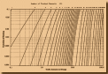
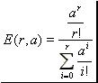
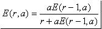

|
Erlang's Loss Formula Important feature in the theory of the Telecommunication networks is the Erlang's Loss formula which computes the probability that a "call offered to a group of circuits finds that all circuits are busy". In the context of this project we were required to develop a Java either applet or application program, converted now to "Java Web Start" (JNLP) application, which calculates those probabilities for a given set of circuit groups in a given range of offered traffic load. Java app  Click on this icon to download "erlang.jnlp" (JNLP) file. Then just accept and double click on this "JNLP" file. This should start "Java Web Start" and you should be able to launch the "Java" application shortly. "Java Web Start" (JNLP) file is for user to download and launch a "Java" program, when user clicks on the downloaded "JNLP" file. With browsers being more restrictive when it comes to running "Java applets", the initially developed "Java applet" converted to "Java Web Start" (JNLP) application so that instead of being launched from "html", it is now being launched with "JNLP", independently of a browser, as it does not rely on a browser (Java) plugin. Prerequisites : a) install "Java JDK/JRE". b) starting with Java 7 Update 51, an application that does not conform with the latest security practices, such as an application not signed with a certificate from "trusted certificate authority" or an application that is digitally signed by an unknown publisher - as in our case - or a "JAR" file not having the "Permission" manifest attribute or an application signed with an expired certificate, can still be authorized to run by including the site (URL) that hosts it to the "Exception Site List" of the "Java Control Panel / Security tab". "Java Control Panel" can be launched e.g. through the "Windows Start menu / Java program listing / Configure Java" or e.g. by searching for the "javacpl.exe" executable. Have a look at https://java.com/en/download/faq/exception_sitelist.xml for more information. So in our case, the "Exception Site List" of the "Java Control Panel" should be properly updated with the following "URL" : "http://aristotelis-metsinis.github.io/". Introduction Lets assume a M/M/r/r queuing system. Namely a system of r servers circuits where the arrival process and the service time follow a Poisson distribution with mean arrival rate l and mean service time 1/m respectively. The system does not provide waiting room. Thereby all blocked calls are cleared. It can be proved that the probability that all servers are busy is given by the Erlang B formula which is defined as follows: , where a=l/m denotes the traffic load, whose units are Erlangs. It might be worth mentioning that the Erlang's Loss Formula (Erlang B) also computes the probabilities of blocking for M/G/r/r queuing systems, where the service times are independent identically distributed according to some general distribution G. It is useful to note the recursive form for the Erlang B formula, which simplifies the numerical evaluation: , where E(r,a) is the probability of blocking, "a" the traffic offered in Erlangs, "r" the number of circuits and E(0,a)=1. Some useful characteristics can be observed by examing the Erlang B formula:
|